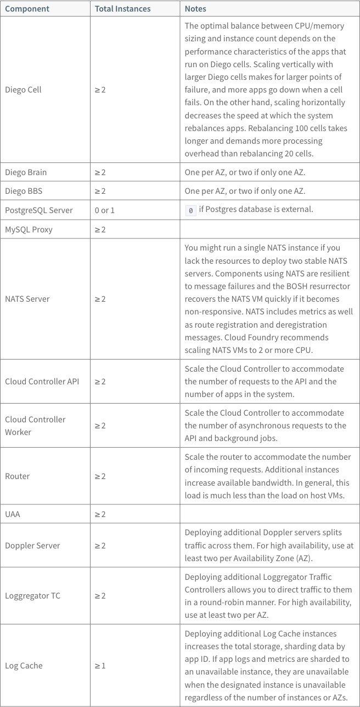
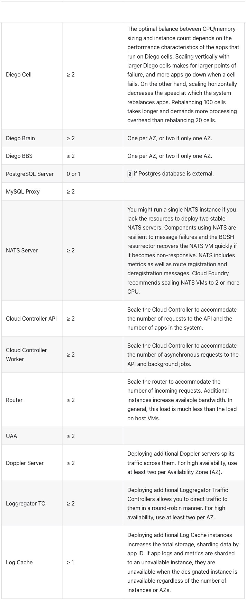
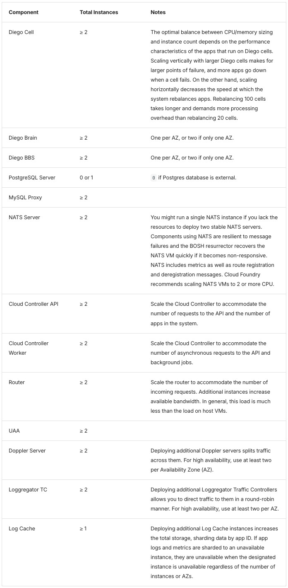
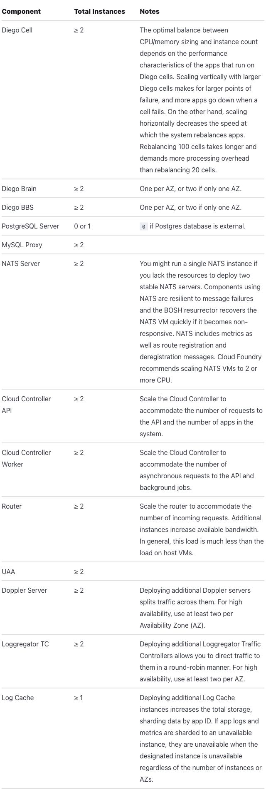
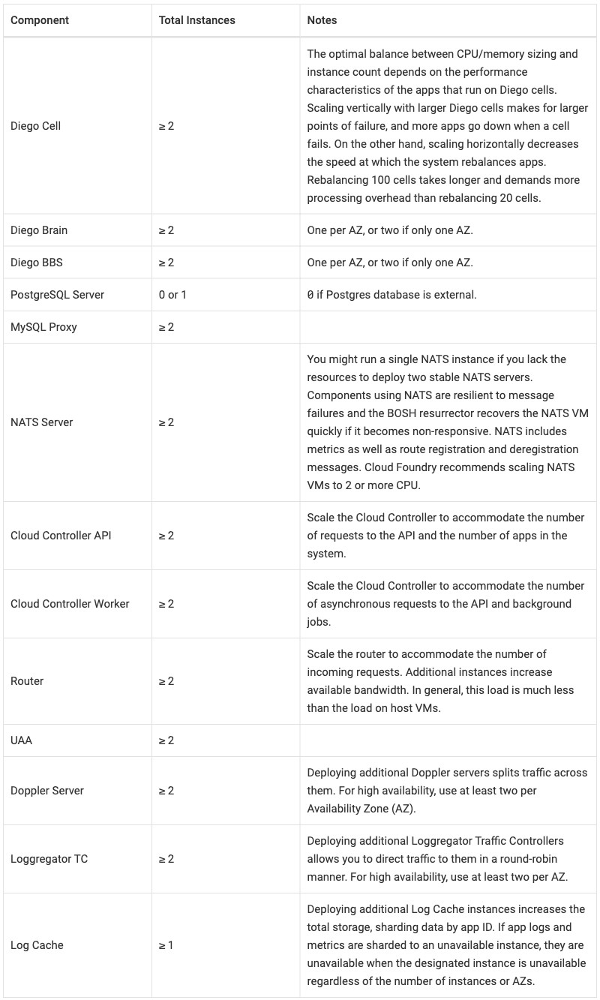

Table 1 Component / Total Instances / Notes
Source widths 25/25/50. In extension the key column stays on one line up to a 16em cap, so “Cloud Controller Worker” widens it (Docusaurus 30/24/46, Zensical 26/25/49, Starlight 31/24/45; in Antora it fits at 25%). Zensical, Starlight, and Antora native carry the widths. Plain pipe tables size columns by content; plain AsciiDoc tables make them equal. Passthrough adds class="table": every HTML table names its style. This table on the published page.




